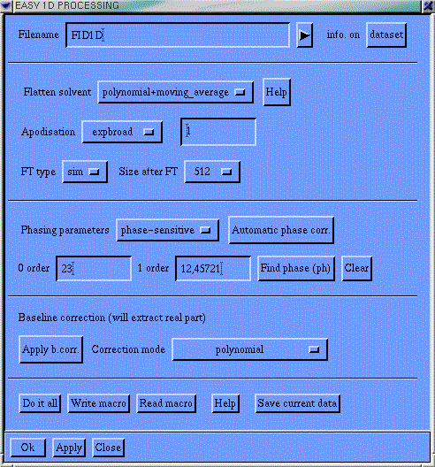
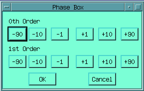
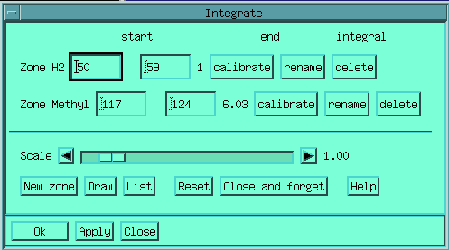
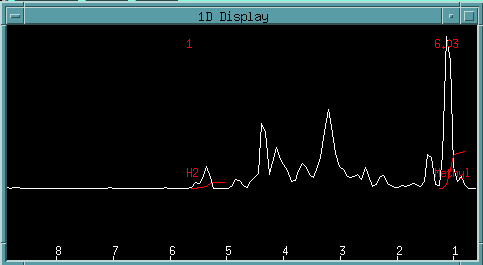
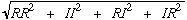
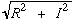

Loading and Saving data-sets : READ, WRITE, READx, WRITEx, ZEROING
nD Fourier transform : ft_sh ft_tppi ft_sh_tppi ft_phase_modu ft_n+p
Post processing : REAL, SWA, USWA, ABS, MODULUS, PLUS, MINUS, ZEROING, SMOOTH, MEDIAN

This
macro has been designed to help the user in processing every day 1D
data-sets. It consists simply in filling each field of the formbox.
Filename is the name of the raw data-set which will be loaded before processing.
Flatten solvent let you choose the way of erasing, or not, the solvent. The solvent being located at the center of the spectral width.
All apodisations are fully available.
As well as the sizes and the types of the Fourier transform.
The phase correction and the base-line correction can be also chosen.
Use 'Find phase' for interactive phasing, or choose 'Automatic phasing'.
Finally a set of action buttons permits to realize all or some of these operations, additionally, the processing set-up can be stored as a macro file, which when executed latter on, realizes the very same processing. This macro file can also be read back and used to fill the fields of a new form. You can also save your current data at any time of your transform operations.
You can load an NMR data-set by typing the READ command. It will load the data-set in the working memory.
In Gifa there is no distinction between time-domain (FIDs) and frequency domain. This is true when processing data-sets (so all the comands are available on all the kind of data-sets), and is also true when storing files. So files contain time or frequency domain data-set, without any distinction.
Several file format are available directly from within the program (plus the utilities permitting to translate from other file formats). The following format are available :
READ or READC (same command) for the standard Gifa cached format, the file is stored in a submatrix format, the parameters are in text format in the header part of the file (can be viewed with more);
READH is for the ft-nmr format;
READL is for NMR1/NMR2 format;
READV is for Varian format. The corresponding write commands are WRITE (or WRITEC) WRITEH and WRITEL (no WRITEV available so far).
Several other file formats are available :
READM and WRITEM reads and writes text files, formatted as one line per row for a 2D data-set, and a single line for 1D (not available for 3D data-sets). This format is compatible with the -ascii format of the MATLAB© program. Note however that no parameters are stored along with the data, and that the text file might have very long line that will overflow most text editors.
READT and WRITET handle data file in generic text format; on entry per line, with a set of parameters; this permits to import and export data from Gifa to any other program.
READS and WRITES are special file format stored in compacted text format; this format is totally independent from the machine used, the file thus stored can be read with the Gifa program running on any machine. This format is in text format and can be safely sent on E-Mail (however you should take care not to send too large files, and eventually cut your large files in smaller pieces (size ² 100kbyte)).
Finally a READZ WRITEZ format is available, this format make use of Linear Predictive Coding to compress the data before storing (J.Magn.Reson. 1991). The WRITEZ command uses the value of the ORDER context as the length of the Linear Predictive Polynomial (see chapter on Linear Prediction). The default value of 10 seems to be an optimum for most NMR data-sets. The compression is performed with no loss of information, with a compression ratio typically in the 50% - 60%. To be used only on time domain data-sets.
Another possibility has been set-up to permits data-set compression. The ZEROING command will set to zero all points below a given threshold. Files thus processed will compress MUCH better than regular files. For instance, on a standard TOCSY on E.Coli thioredoxin 3mM, using gzip
|
compressed |
uncompr |
ratio |
|
|---|---|---|---|
|
1945574 |
2101248 |
7.4% |
standard file |
|
870750 |
2101248 |
58.5% |
after zeroing $noise ; barely visible |
|
149825 |
2101248 |
92.8% |
after ZEROING (3*$noise),more drastic, but all peaks are still there |
A comprehensive set of apodisation function is available :
EM is for exponential broadening. The parameter is the broadening applied in Hz. Negative values are possible and are for resolution enhancement (associated with GM). The value used is given by the value in the context LB. In 2D and 3D, will apply a different exponential apodisation on axis and will prompt you for a width for each axis consecutively. If you do not wish to modify on a given axis, enter a null value.
GM is for Gaussian
broadening. The parameter is the broadening applied in Hz. The value
used is given by the value in the context GB.
LB
and GB are also used in Maximum
Entropy processing.
SIN is for a shifted sine-bell. The parameter is the position of the maximum of sine-bell, varying form 0 (pure cosine) to 0.5 (pure sine). The parameter of SIN is not kept in a context.
SQSIN is equivalent to SIN but applies a SQuared SINe-bell.
TM is for trapezoidal windowing, and it uses two parameters which are the coordinates (in points) of the 2 points T1 and T2. The window then goes from 0.0 value at the first point of the data set to 1.0 at T1 and from the 1.0 value at point T2 to 0.0 at the last point plus one of the data set.
In 1D, you can use the sequence :
Gifa> ONE SIN .3 ; or any other apodisation
to visualise the effect of a given filter.
Truncation and zero-filling can be applied by the CHSIZE command which changes the size(s) of the data-set. You can then truncate a FID or append zeros and the end. CHSIZE can be used on any data-set, not only on FIDs, but the EXTRACT is preferable for spectra. The zero filling capabilities in the Graphic User interface uses the CHSIZE command associated to the power2() function.
These commands are for the basic Fourier transform step. They realizes the Fourier transform in the acquisition dimension (F2 in 2D, F3 in 3D). ft_sim is for complex acquisition (simultaneous sampling of complex and imaginary points); ft_seq is for interlaced acquisition of real and imaginary points (1D TPPI).
In 2D and 3D the Fourier transform along the non classical axis is performed with another set of macros. The number of way you can acquire the data along the incremental axis of a 2D is much larger than what can be done in the acquisition axis. These macro implements the FT for the more common acquisition mode.
ft_sh performs the Fourier transform for datasets acquired in States-Haberkorn mode
ft_tppi performs the Fourier transform for datasets acquired in Time Proportional Phase Increment
ft_sh_tppi performs the Fourier transform for datasets acquired in the mixture of the 2 previous modes
ft_phase_modu performs the Fourier transform for datasets acquired in phase modulation (J-Modulated for instance)
ft_n+p performs the Fourier transform for datasets acquired with Pulsed Field Gradients in echo/antiecho mode.
Phasing of the data can be applied with PHASE a b. The 2 parameters a and b, are respectively the 0th order (frequency independent) and 1st order (frequency linearly dependent) phase corrections. In 2D and 3D, axis on which phase correction should be applied is also entered. The pivot for the first order correction is always the centre point of the spectrum. PH is an interactive mode for phasing 1D data-sets.
you can choose and move around your pivot (the double line) by clicking on the spectrum with the second button of the mouse, and you can add phase corrections using the Dialogue box. You can zoom in and out, selecting the zoom box with the first button. Clicking "OK" will finish the PH mode, leave the spectrum phased and load the PHASE default values with the one you just chose, clicking "CANCEL" will exit the PH mode as if nothing had happen. HPHASE permits to phase real data-sets, with the same syntax as PHASE.
HPHASE performs a Hilbert transform in order to create the missing imaginary part, it thus permits to phase a real spectrum by creating the imaginary part on fly.
The sequence IFTBIS FT will create a complex spectrum from a real one (with half the resolution), thus permitting to experiment phase parameters with the PH command. These phase parameters can then be used on the corresponding original real spectrum.
An automatic phasing method have been made available in Gifa lately : it is the APSL method (by A.Heuer, J.Magn.Reson. 91, p241-253 (1991)). This method works by using the symmetry of the phased line. A macro have been written which implements this method, it is called apsl, and works in 1D.
Start the 1D graphic integration module. Here is an example of an
integration, with 2 zones defined.
And you get on screen :


From
there, you can create and delete integration zones; calibrate one
zone to a given value and all other zones will adapt; or even create
a listing :
Note that the base line should be corrected before
hand. Accurate integration values can also be obtained when using the
Linefitter.
adapting to your own set-up
The macros present above are intended to be adapted to your own set-up and spectrometer. The way the complex numbers are stored in the FID depends on the spectrometer manufacturer, so these macro should be adapted so that the spectra show correctly after using them. They are based on elementary commands presented below. In the standard distribution, the files are pre-set for usage with Bruker spectrometers. A series of adapted macros are available for Varian users in the directory: /usr/local/gifa/macro/varian. Have a look to the README file in there.
You can easily customise your set-up to use the Varian macros by
default by adding the varian directory to your GifaPath. This is done
by adding the following line :
SETPATH
('/usr/local/gifa/macro/varian'; $GIFAPATH)
at the
end of the set-up file: /usr/local/gifa/macro/startup.g
This
should be done for each new version of Gifa you download. (See
customising
the interface for details)
These commands details the elementary steps of the basic Fourier
transform.
The elementary Fourier transforms available are :
FT IFT : complex to complex FT and its inverse
RFT IRFT : real to complex FT and its inverse
FTBIS IFTBIS : complex to real FT and its inverse
The complete set of Fourier transform can also be summarised as follow (C stands for Complex and R for real) :
FIDs Spectra C ~FT-> C C <-IFT~ C R ~RFT-> C R <-IRFT~ C C ~FTBIS-> R C <-IFTBIS~ R R Does not exist R
The Hilbert transform is simply realised by :
IFTBIS FT ; generate a complex data set from a real
IFTBIS PHASE 90 0 FTBIS ; generate the missing imaginary part
IFT FTBIS ; in-place zero filling using Hilbert relations
Depending on the spectrometer the data you get should usually be
processed with FT (complex FT) or RFT (real FT) and eventually
pre-processed with REVF. REVF actually inverses every 2 points over
4. This has the effect to reduce the time-proportional format used
for the seq mode on BRUKER spectrometers (on real data-sets).
On
complex data-set it has the effect to put the zero-frequency on the
borders of the spectrum (after the FT step!).
INVF is related to
REVF, it inverse every other point in the data set, thus taking the
conjugated value on complex data-sets. Because of this, the sequences
: INVF FT and FT REVERSE are equivalent. On hypercomplex data (2D)
INVF F12 will take the hyperconjugated.
REVERSE simply returns
the current spectra left to right.
1D Data-set are either real or complex. On multidimensional
data-set (2D or 3D), each direction may be either real or complex.
This the so-called hypercomplex data-type.
The type of the
data-set (real or complex) is described by the context ITYPE.
For 1D, ITYPE is 0 for real data and 1 for complex data.
For 2D, ITYPE can takes 4 different values :
0 means real;
1 means complex in the F2 direction
2 means complex in the F1 direction (I know, this is a bit odd but has to make sense in 1D as well as in 2D)
3 means complex in both directions (so-called Hypercomplex data type).
In 3D
1 means complex in F3
2 complex in F2
4 complex in F1
and the corresponding sums depending on the hypercomplex state of the data-set. For instance
7 means that the data-set is complex in all axes.
Certain commands require a specific ITYPE
value. For instance FT is
available only on complex data sets. An error message will be given
if an FT is tried on a real
data-set. Note that if the data is complex, the real part is held in
odd points of the buffer, the imaginary part is held in the even
points.
ITYPE is usually
handled automatically by the program, so the user does not need to
worry about it. You may however have to change it in certain cases,
typically when loading the data-set the first time, when "playing
around" with the data-set, or when a "bug" happens in
the program (highly unlikely......!?)
Two data-sets (1D, 2D or 3D) can be added together with the ADD command which prompts you for a file-name, then adds the current data-set along with the content of the file "file-name" in standard format, the result being left in memory.
It is also possible to add a file in FT-NMR format with the ADDH command.
Finally it is also possible to add the current buffer with the data held into the DATA buffer with the ADDDATA command (single word).
In all cases, you may want to pre-scale the current data-set with the command MULT which allows one to multiply the current data-set by a given scalar.
The command MULTDATA, on the other hand, multiplies point by point the content of the current buffer with the content of the DATA buffer. This permits to realise convolution product. When applied on complex (respectively hypercomplex) data-sets, a complex (respectively hypercomplex) product is realised. (See Several Buffers) for more multi buffer commands
These commands are meant for post-processing of spectra after Fourier transformation :
REAL will remove the imaginary part of a complex data-set, thus halving of the size of the file of a phased spectrum.
USWA will separate the real and imaginary part of a complex data-set, they will be displayed on each side of the data-set, changing its ITYPE from complex to real, thus permitting to examine both part at the same time.
SWA performs the inverse of USWA by taking each side of a real data-set as real and imaginary parts of a complex data-set. Both SWA and USWA will only work on data with a size equal to a power of two. If it is not the case, you will have to add zeros up to the next power of 2, apply the command, and then reduce the size to the previous value.
ABS will compute the absolute value of the current real data set.
MODULUS will compute the modulus of the current complex data-set and put the result in a new real data-set. In 2D the action taken will depend on the value of ITYPE :
ITYPE=3, the hypercomplex modulus = will be computed
ITYPE=1, the complex modulus = will be computed along F2
ITYPE=2 is not handle and the data should be modified with FLOP.
In 3D, the modulus will be computed only for fully hypercomplex data-sets (ITYPE = 7).
PLUS and MINUS will put to zero all the negative points (the positive for MINUS), thus leaving a purely positive (negative) data-set.
ZEROING will set to zero all points below a given threshold (very useful for compacting processed data-file see above at WRITE).
SMOOTH and MEDIAN are after-processing filters. SMOOTH realises a moving-average smoothing of the data set on a window of variable length, whereas MEDIAN will perform a median filter on the data-set, by taking the ith smaller value of the moving window. Both MEDIAN and SMOOTH will change the data-set size by the number of point of the moving window.
Permits to compute the noise level and the systematic offset of
the current data-set within a given window. Computed noise level will
be put into the context NOISE,
the systematic offset will be in SHIFT.
ADDBASE will remove a given
systematic offset on the data-set. The command prompts you with the
last value computed by EVALN.
A
macro: evaln.g implements a graphical interface to EVALN,
permitting to compute noise in a graphically given window.
Implements the Digital Shifted Acquisition method which permits reduction of the water signal after acquisition (if the water signal is at zero-frequency). This command will actually add the actual data with itself, after a shift and multiplication. Values of -2 for the shift and -1.0 for the multiplication factor will remove the water signal at zero frequency on a BRUKER data-set. You can notice that there are also several other ways of removing the water by the flatten solvent correction methods.